DOCUMENT 05
ワイヤーフレーム
ワイヤーフレーム作成方法
AIに対して本サービスの各ページのワイヤーフレームの構成を提案するよう指示。
提示されたものをFigmaにて実装。
トップページ
トップページ ワイヤーフレーム（PC版）
Figmaで作成したワイヤーフレームのスクリーンショットを配置
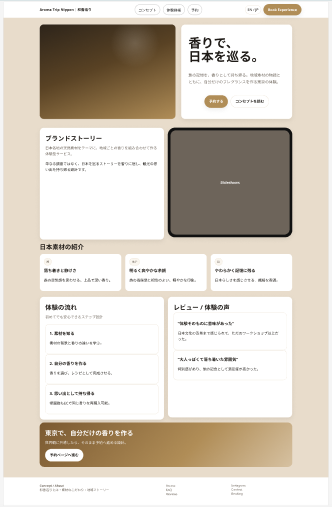
配置意図の説明
各セクションの配置理由とユーザーへの効果
香りづくり体験によって得られる付加価値は何？
を訴求するために、まずは先頭にスライドとキャッチコピーを提示。
その後、ブランドコンセプトと素材で興味を喚起。
体験の流れとレビューで不安感を払しょくし、
予約へ導く流れを意図。
下層ページ
下層ページ ワイヤーフレーム
各下層ページのワイヤーフレームを順に配置
【コンセプト】
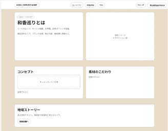
配置意図：同様のサービスとの差別化要因を説明することで、本サービスの選択を促す
【体験詳細】
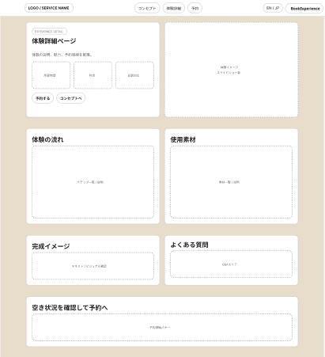
配置意図：体験内容を詳しく説明することで、申し込みに対する不安感を取り除く
【予約】
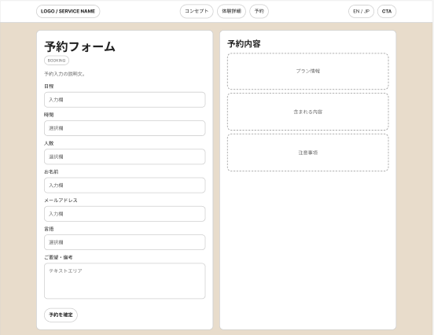
配置意図：入力情報を最小限にすることで離脱を防ぐとともに、要望欄を設けることでユーザーの懸案事項を当方に伝える手段とする
【予約確認】
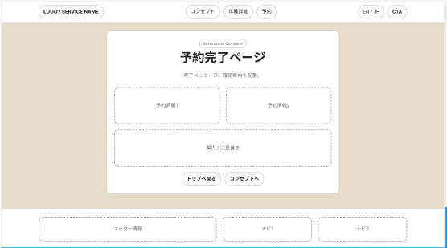
配置意図：「ちゃんと申し込みが完了したのか？」というユーザーの不安を取り除く
Webアプリケーション画面
Webアプリ画面 ワイヤーフレーム
主要な画面（ログイン・一覧・登録・詳細・編集）のワイヤーフレーム
【ログイン】
【顧客一覧】
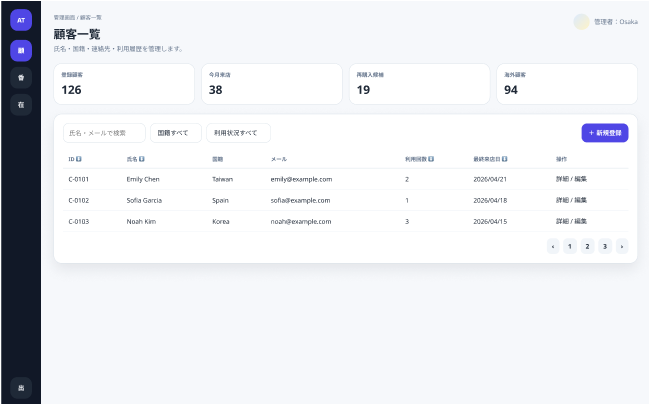
【顧客新規登録】
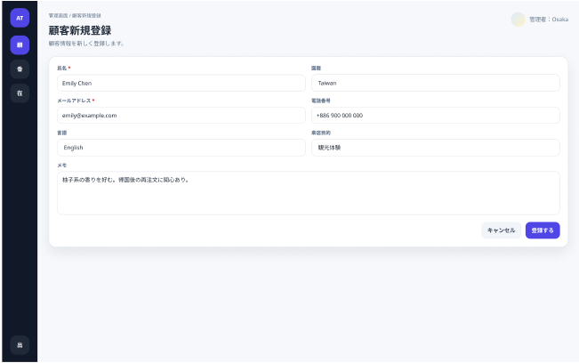
【顧客編集】
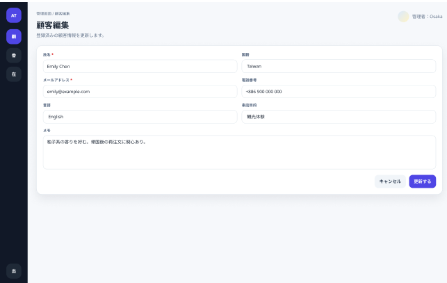
【顧客詳細】
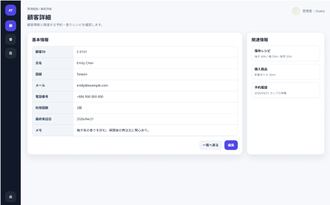
【香りレシピ一覧】
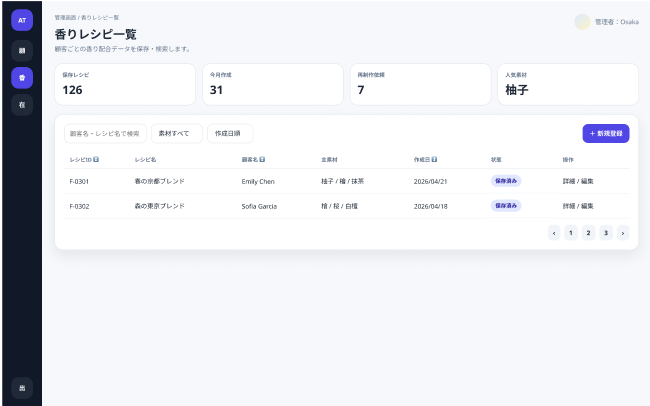
【香りレシピ新規登録】
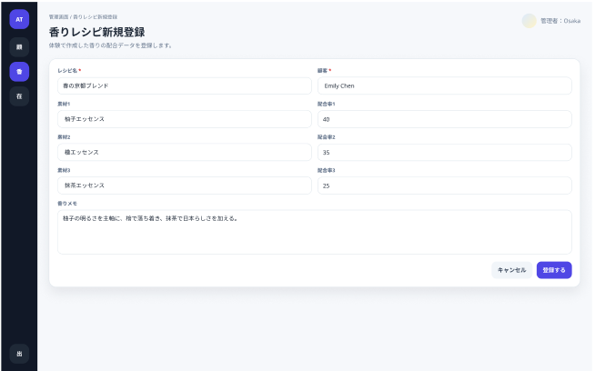
【香りレシピ編集】
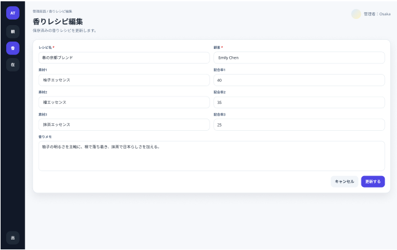
【香りレシピ詳細】
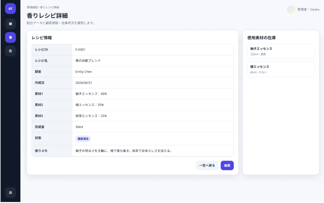
【在庫一覧】
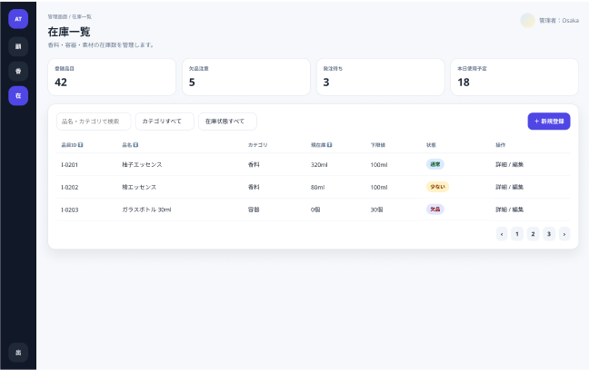
【在庫新規登録】
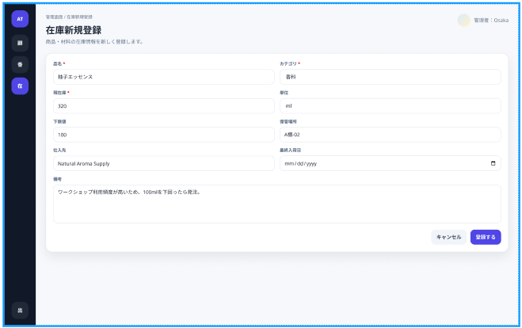
【在庫編集】
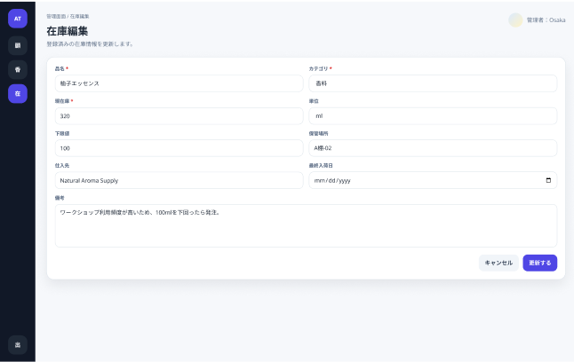
【在庫詳細】
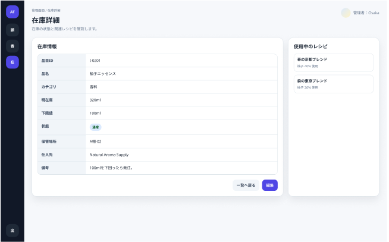